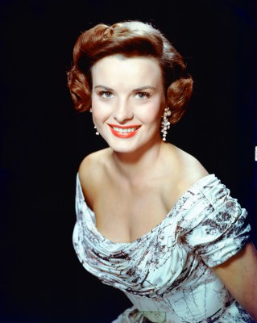

#4030 Niagara

 IMDB-Wertung: 7.1 / 10
IMDB-Wertung: 7.1 / 10  Tomatometer: 86
Tomatometer: 86  Metascore: 0
Metascore: 0 
Während eines Urlaubs an den Niagara-Fällen will sich Rose Loomis ihres seit dem Koreakrieg nervenkranken Gatten George entledigen. Gemeinsam mit ihrem Geliebten Ted schmiedet sie ein Komplott. Als George "verschwindet", alarmiert Rose plangemäß die Polizei. Kurze Zeit später wird unter den Wasserfällen eine Toter entdeckt. Bei der Identifizierung der Leiche trifft Rose beinahe der Schlag...
Jahr: 1953
Dauer: 88 Minuten
FSK: 16
Land: USA Studio: Twentieth Century-Fox Film CorporationTonspuren: DTS - ,
Untertitel: Deutsch,
Auflösung: 1080p (1488x1080) Größe: 6471 MB
Genre: Thriller, Krimi,
Regisseur: Henry Hathaway
Drehbuch: Matthew Michael Carnahan
Soundtrack:
Darsteller:
 Marilyn Monroe als Rose Loomis
Marilyn Monroe als Rose Loomis Joseph Cotten als George Loomis
Joseph Cotten als George Loomis-  Jean Peters als Polly Cutler
 Max Showalter als Ray Cutler
Max Showalter als Ray Cutler- Lurene Tuttle als Mrs. Kettering
- Russell Collins als Mr. Qua
 Will Wright als Boatman
Will Wright als Boatman Henry Beckman als Motorcycle Cop , uncredited
Henry Beckman als Motorcycle Cop , uncredited Harry Carey Jr. als Taxi Driver , uncredited
Harry Carey Jr. als Taxi Driver , uncredited Sean McClory als Sam , uncredited
Sean McClory als Sam , uncredited- Willard Sage als Motorcycle Cop , uncredited
- Denis O'Dea als Inspector Starkey
- Richard Allan als Patrick
- Don Wilson als Mr. J.C. Kettering
 Bill Coontz als Young Man , uncredited
Bill Coontz als Young Man , uncredited- Robert Ellis als Young Man , uncredited
- Howard Engel als Man at Bus Stop , uncredited
- Neil Fitzgerald als Customs Officer , uncredited
- Gloria Gordon als Dancer , uncredited
- Patricia Henderson als (uncredited
- Winifield Hoeny als Straw Boss , uncredited
- George Ives als Carillon Tower Guide , uncredited
- Arch Johnson als Taxi Driver , uncredited
 Lester Matthews als Doctor , uncredited
Lester Matthews als Doctor , uncredited- Norman McKay als Morris , uncredited
- Audre Monture als Woman in Gift Shop , uncredited
- Patrick O'Moore als Detective , uncredited
- Tom Reynolds als Husband , uncredited
 Bert Stevens als Doctor , uncredited
Bert Stevens als Doctor , uncredited Minerva Urecal als Mrs. McGrand, Landlady of McGrand's Boarding House , uncredited
Minerva Urecal als Mrs. McGrand, Landlady of McGrand's Boarding House , uncredited- Nina Varela als Wife , uncredited
- Gene Wesson als Guide , uncredited
Datei: X:\1950-1959\Niagara (1953, FSK16, 1488x1080).mkv seit 14.07.2016
Festplatte: HD 1900-1970
 Es gibt insgesamt 141 Filme in der Gruppe '1950-1959'
Es gibt insgesamt 141 Filme in der Gruppe '1950-1959'